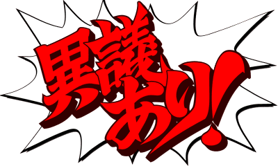
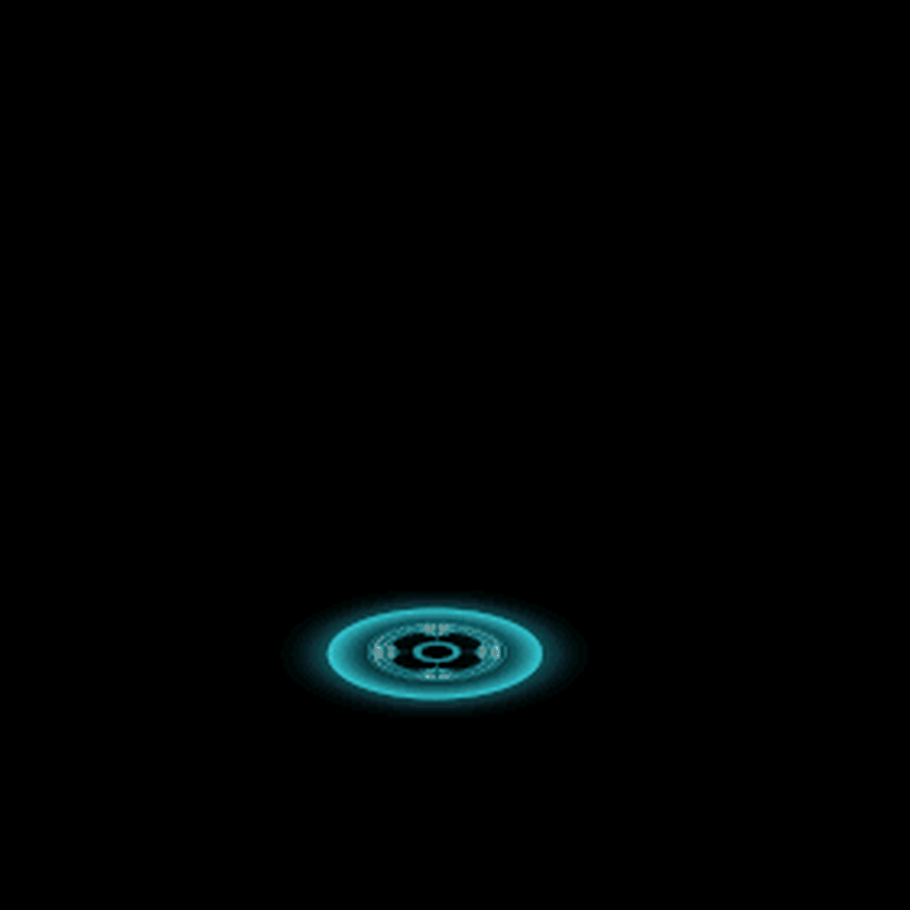

user
挑衅中
50
/
50
气:
0
北条
挑衅中
50
/
50
气:
0
🔥
杀意
(3)
第1回合
战斗开始，请选择行动...
🔥
杀意
战场杀气弥漫，激发双方战意
双方攻击伤害×1.5，但每次攻击自己也受到25%伤害
🔥
杀意
Q
集气
W
防御
E
轻击
R
重击
T
绝招
Y
嘴炮
U
道具
Esc
逃跑
战斗开始，请选择行动...
确认行动
你确定要执行此操作吗？
返回战斗
确认行动
确认退出
确定要退出战斗吗？
返回战斗
确认退出
游戏结束
游戏结束信息
选择道具